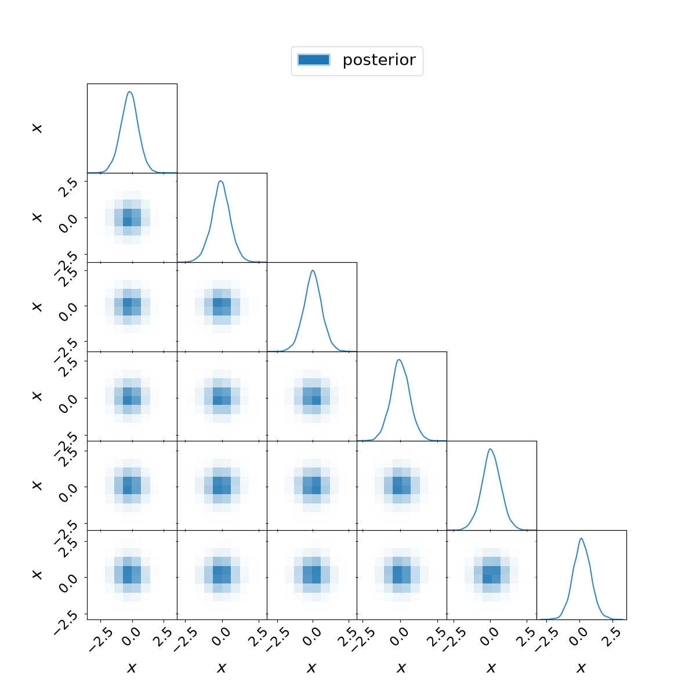

Experimental · outside Pulse · unchanged posterior · one frozen run per policy.
Driver: halted. timeout
Charged runtime: 242.32s, including preflight. Stage times are inclusive and overlap.
| Policy | Status | Process seconds | Axes | Plotting | PNG export |
|---|---|---|---|---|---|
| no-corner | success | 54.054 | — | — | — |
| six-small | success | 62.278 | 0.436 | 2.649 | 1.005 |
| thirty-small | timeout | 120.092 | 9.997 | 74.739 | — |
The full30D small-canvas figure tests cost, not a recommended readable default. No production settings changed.

plot-thirty-small: unfinished stages wrapped_replay, visualize, search_corner, png_export.